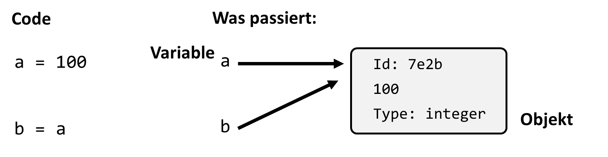

5. Control Structures and Conditions#
5.1. Scripts and Programs#
Programming often involves executing multiple commands in sequence. When such commands are written together and executed in an integrated development environment (IDE) like Spyder, we refer to this as a script or a program.
5.1.1. Difference Between Script and Program#
The terms script and program are often used interchangeably, but there is a subtle difference:
Script: A simple, often shorter piece of code that fulfills a specific task. Scripts are typically used for smaller, temporary tasks.
Program: A larger and more complex software product with extensive functions and structures.
In this course, we use the terms largely synonymously.
Program \(\approx\) Script (and Program > Script)
Example of a small script:
fruit = ["apple", "orange", "banana", "pear"]
juice_choice = 1
ice_choice = 2
print(fruit[juice_choice] + " juice") # or: print(f"{fruit[juice_choice]} juice")
print(fruit[ice_choice] + " ice cream")
Mini Quiz
What does this script output?
apple juice, orange ice cream
orange juice, banana ice cream
banana juice, orange ice cream
I don’t know! I’d have to guess (but I won’t).
Hmm, pretty boring program.
Let’s make it more interactive by adding user input:
5.1.2. User Input#
A common feature of interactive programs is the ability to process user input. In Python, this is done using the input() function:
my_str = input("Enter a string: ")
print(my_str) # => Outputs the entered string
We can make our previous fruit script more interactive:
fruit = ["apple", "orange", "banana", "pear"]
print(f"We have: {fruit}")
fruit_choice = input("Please enter your choice: ")
print(f"Here is your {fruit_choice} ice cream!")
5.1.3. Quiz:#
What happens if I enter „Ketchup“?
a) Here is your Ketchup ice cream!
b) ValueError
c) We have no Ketchup ice cream!
This leads us to the question:
How can we check if our choice exists?
Earlier, we briefly covered the xxx in my_list check for sequences. This is already a condition, and conditions in Python can be evaluated in various ways:
5.2. Conditions#
Conditions are a central component of almost every program, enabling decisions based on the state of the data. A condition is a simple logical statement that is either true (True) or false (False).
5.2.1. Comparison Operators#
In Python, various comparison operators are used to create conditions:
9 < 10 # => True
print(3 < 4 < 5) # => True
print(4.0 == 4) # => True
print(4.01 == 4) # => False
"apple" < "banana" # => True (Python uses alphabetical order: a < b)
"apple" != "pear" # => True
5.2.2. Difference Between is and ==#
A common beginner mistake is confusing is and ==. These operators have different meanings:
==checks whether two objects have the same value.ischecks whether two objects point to the same memory address, i.e., are identical.
a = 12345678
b = 12345678
print(a == b) # => True
But with is, we get a different result:
print(a is b) # => False
5.2.2.1. Why the difference?#
Variables in Python reference values stored somewhere in memory.
is checks whether two objects are the same and stored at the same memory address. This can also be verified using the id() function:
print(id(a))
print(id(b))
print(id(a) != id(b)) # => True

In practice, we rarely use is in this context. However, understanding what happens „under the hood“ helps with another important distinction in Python: mutable and immutable data types.
5.2.3. Mutable vs. Immutable Data Types#
Mutable Data Types: Values can be dynamically changed. Examples include lists, sets, and dictionaries.
Immutable Data Types: Values cannot be changed after assignment. Examples include integers, floats, booleans, strings, and tuples.
Example:
fruits = ["apple", "banana", "mango"]
print(fruits[-1]) # -> mango
# Lists are mutable:
fruits[-1] = "orange"
print(fruits[-1]) # -> orange
# Tuples are immutable:
fruits = ("apple", "banana", "mango")
print(fruits[-1]) # -> mango
fruits[-1] = "orange" # -> TypeError
5.2.4. Logical Operators#
Python provides logical operators and, or, and not for combining conditions:
True and False # => False
True or False # => True
Example:
a = 4
a < 0 or a > 3 # => True
5.2.5. Conditional Statements (if, else, elif)#
Conditions and logical checks allow us to control program flow and implement „decision-making“ in our programs.
Example of a simple if statement:
number = 0.01
if number >= 0:
print(f"{number} is positive.")
For more complex decisions, use if-else or if-elif-else structures.
Example with if-else:
number = 0.01
if number >= 0:
print(f"{number} is a positive number.")
else:
print(f"{number} is a negative number.")
Example with if-elif-else:
number = 0.01
if number > 0:
print(f"{number} is positive.")
elif number < 0:
print(f"{number} is negative.")
else:
print(f"{number} must be 0.")
5.2.6. Loops#
Loops are another fundamental control structure in Python. They allow you to repeat code while a condition is met. Loops can also combine with conditional statements to create more complex workflows.
5.2.6.1. While Loop#
The while loop repeats code as long as a specified condition is True.
Example:
x = 2
while x < 1000:
x = x**2
print(x)
5.2.6.2. For Loop#
The for loop iterates over elements of a sequence or range:
for char in "Python":
print(char)
for num in range(5):
print(num)
5.2.7. List Comprehensions#
A concise way to create lists using loops is a list comprehension:
my_list = [1, 2, 3]
squared = [x**2 for x in my_list]
print(squared) # => [1, 4, 9]
print([s[0] for s in ["eins", "zwei", "drei"]])
# => ['e', 'z', 'd']